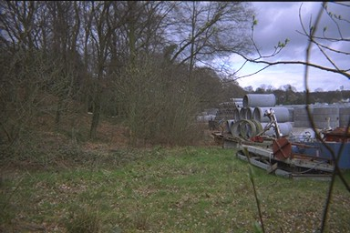

The canal followed the line of trees to the left of the picture before sweeping round to the right, following the perimeter of the modern compound. Later, the stream was dammed, presumably to create a reservoir for industrial use, and the footpath to the right crosses it to meet the line of the canal again further on.